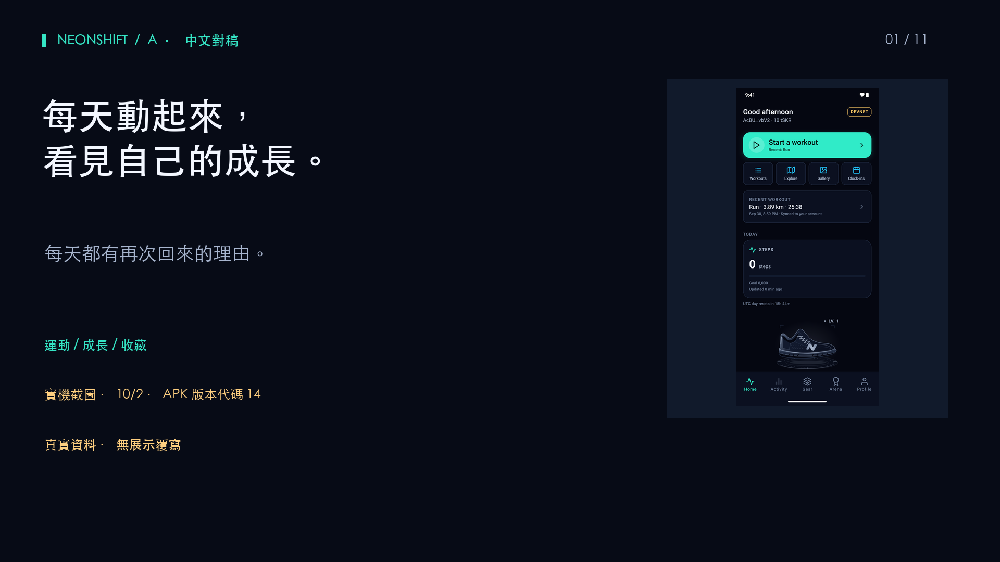
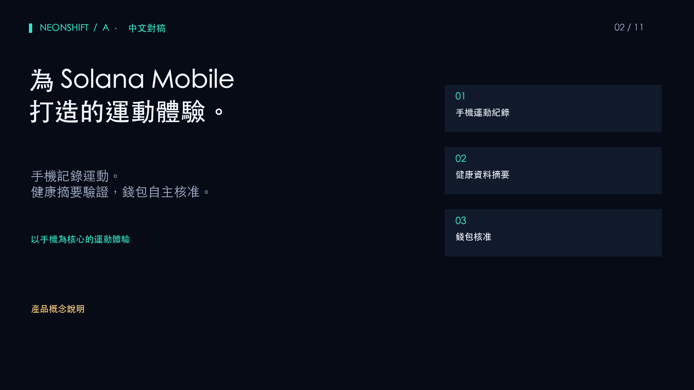
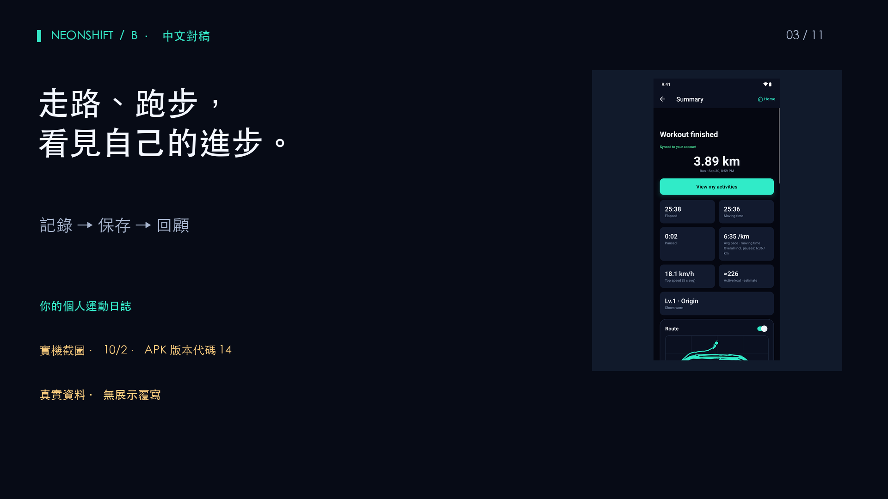
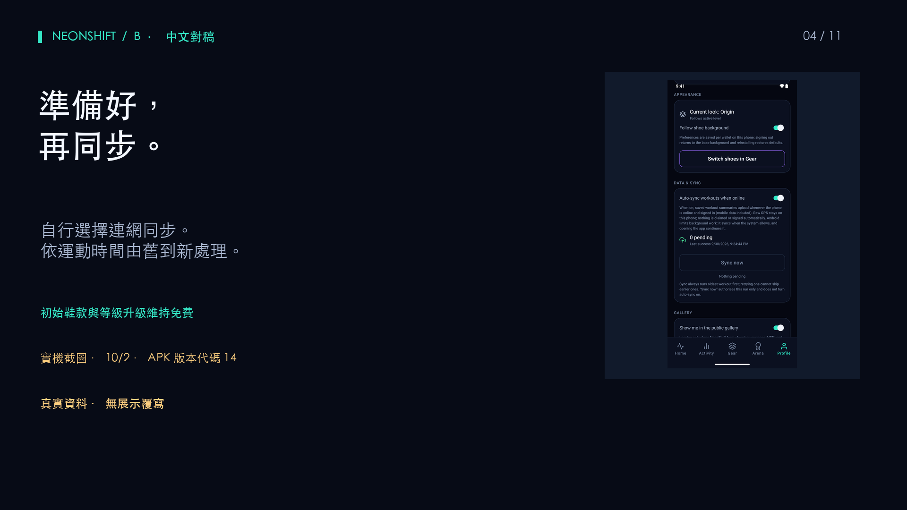
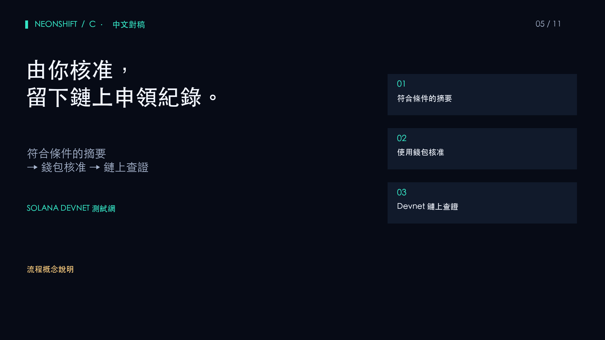
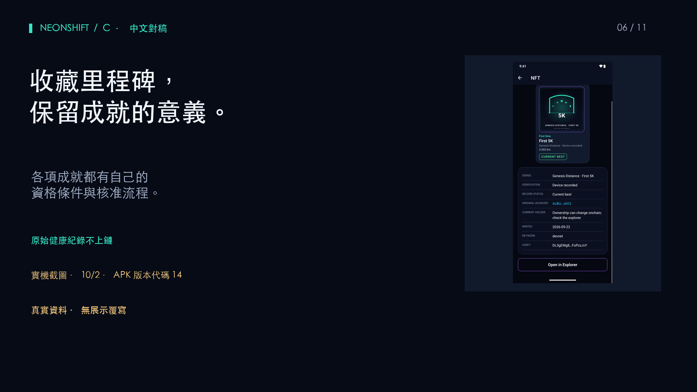
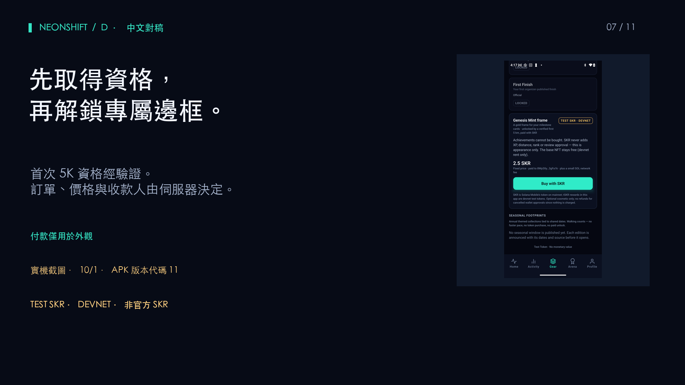
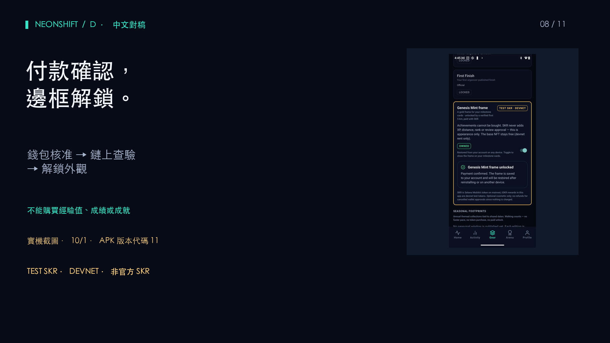
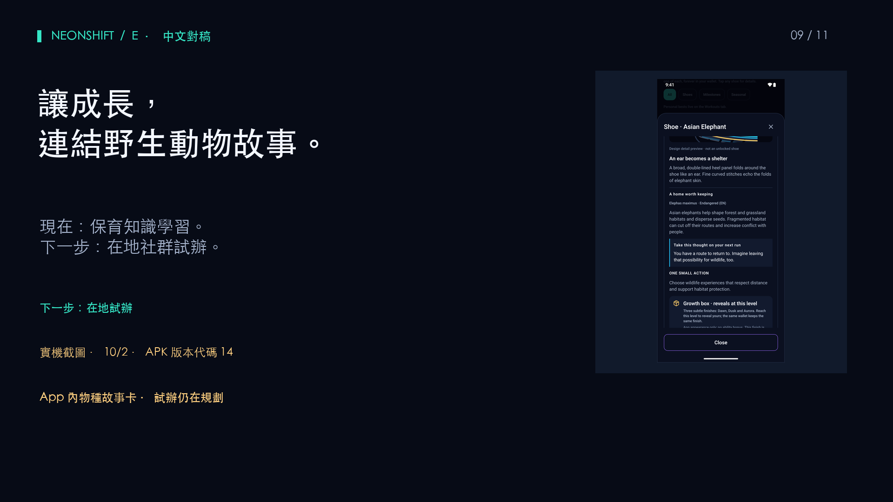
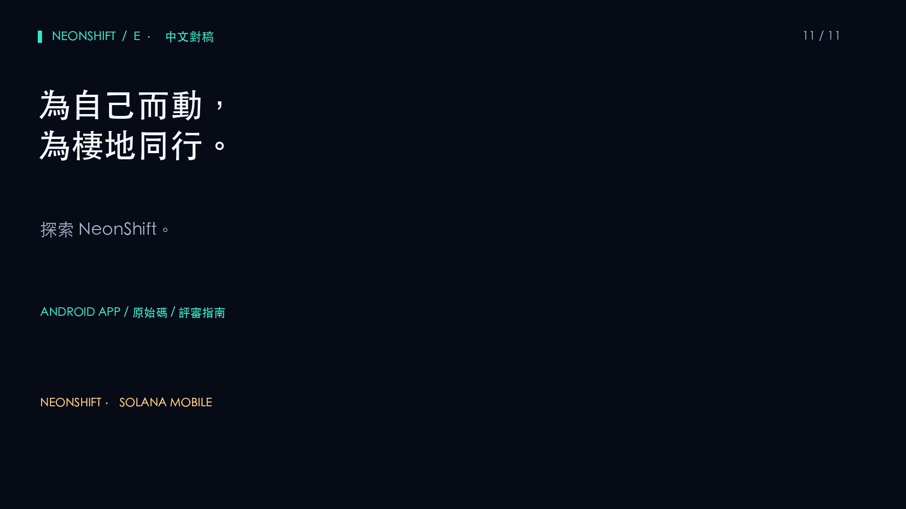

01 · 12 s · 最初幾天過後，是什麼讓我們繼續運動？NeonShift 將每天的運動轉化為看得見的成長、野生動物主題跑鞋，以及再次回來的理由。

02 · 13 s · NeonShift 為 Solana Mobile 打造，將日常活動連結到可以收藏與查證的成就。

03 · 17 s · 從一次步行或跑步開始。記錄運動、保存在手機上，再透過 Activity 日誌回顧自己的進度。

04 · 18 s · 可以選擇連網時自動同步，已保存的運動會由舊到新處理。初始鞋款與等級升級維持免費。記錄一筆運動，不代表自動取得獎勵資格。

05 · 18 s · 符合條件的活動可以在 Solana Devnet 上申領獎勵。每日步數任務會先檢查 Android Health Connect 摘要，再由使用者透過錢包核准。交易結果可在區塊鏈瀏覽器查閱。

06 · 17 s · 原始健康紀錄不會公布到鏈上。成就收藏品有各自的資格條件與核准流程。區塊鏈記錄的是申領，而不是運動的每一步。

07 · 22 s · NeonShift 將代幣付款用於外觀。符合首次五公里資格的跑者，可以使用 Devnet 測試代幣付費解鎖 Genesis Mint 邊框。訂單、價格與收款人由伺服器決定。

08 · 23 s · 核對內容後，再透過錢包核准。伺服器驗證鏈上轉帳已確認後，就會為該錢包解鎖邊框。本次付款使用測試代幣，並非官方 SKR，不能購買經驗值、成績或成就。

09 · 12 s · Wild Guardians 將個人成長連結到保育學習。在地社群試辦仍在規劃中。目前不宣稱已有合作或捐款。
10 · 13 s · 下一步：質押 SKR 可提升任務獎勵，跑鞋等級越高，加成越高。質押獎勵的固定比例，將撥入獨立追蹤的野生動物保育基金。比率尚未定案。

11 · 12 s · 請透過提交連結查看 Android App、原始碼與評審指南。為自己而動，為棲地同行。